Nuestra Galería
Una mirada al tiempo y al territorio. Archivo histórico y vida actual se encuentran en una misma historia que sigue en movimiento.

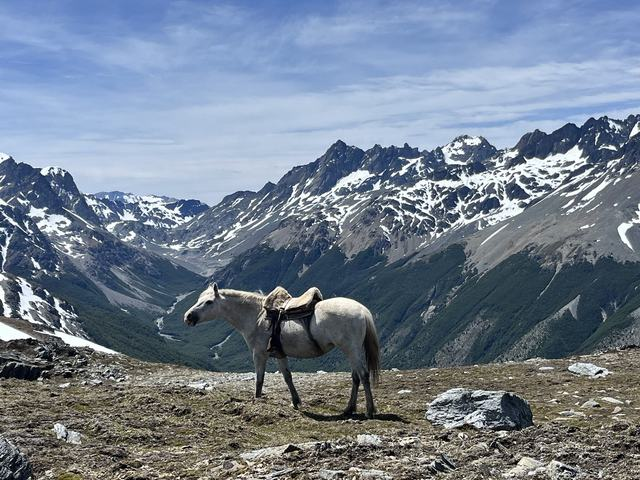

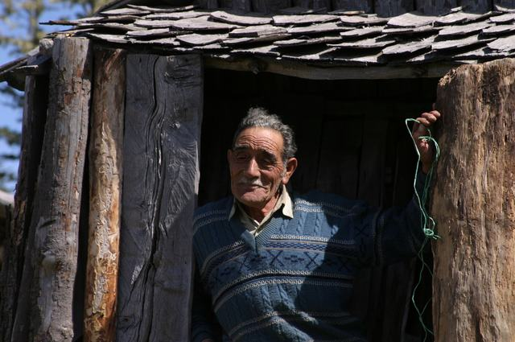

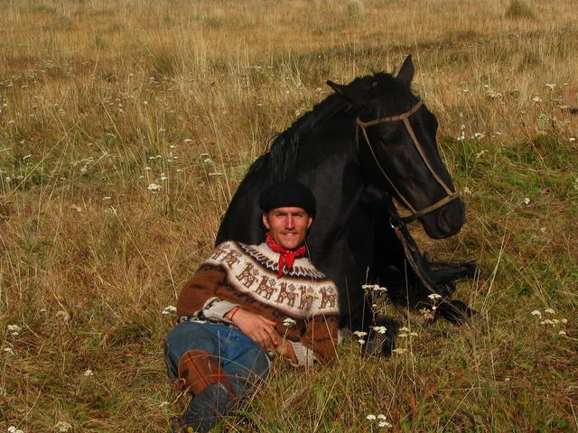

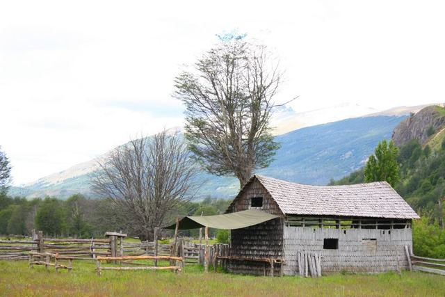

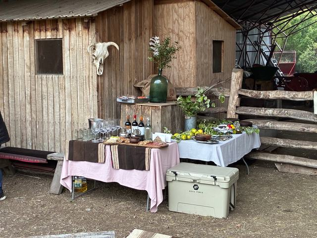

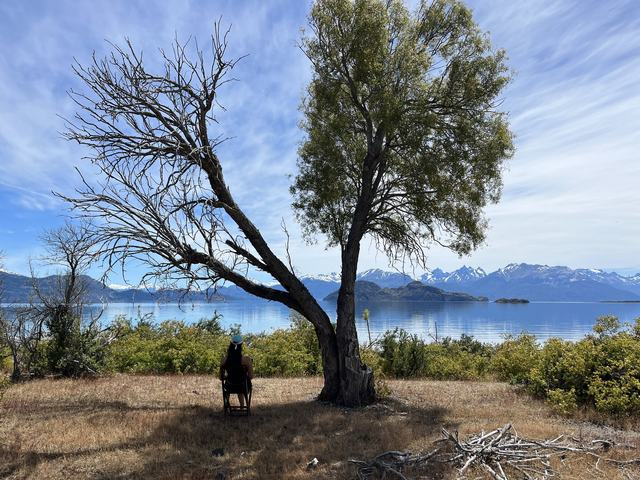

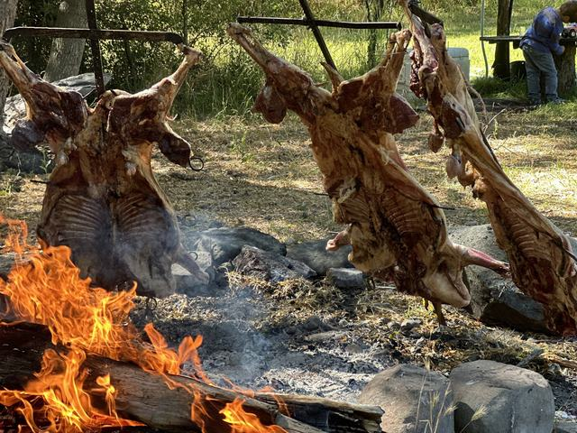

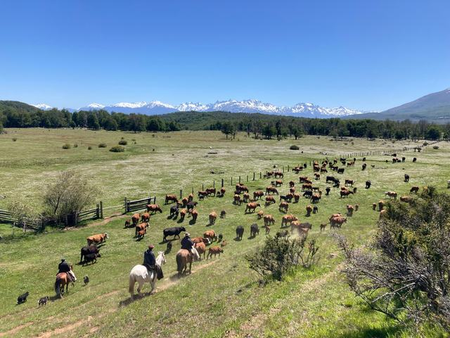

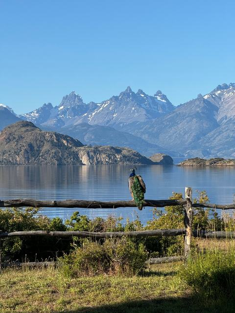

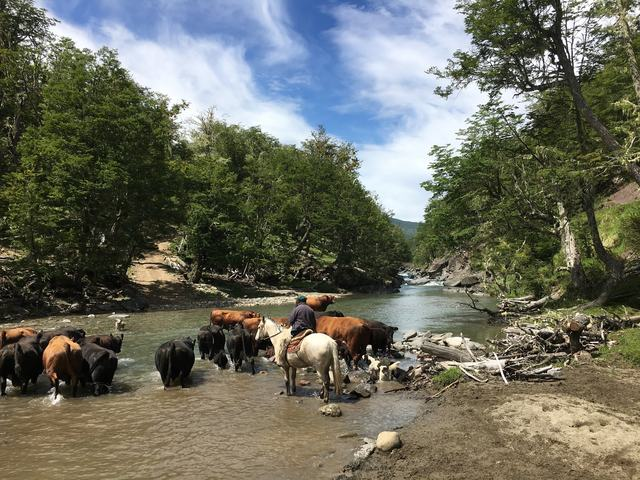

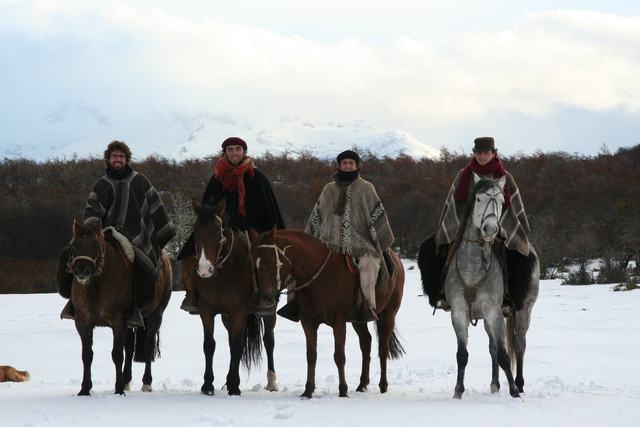

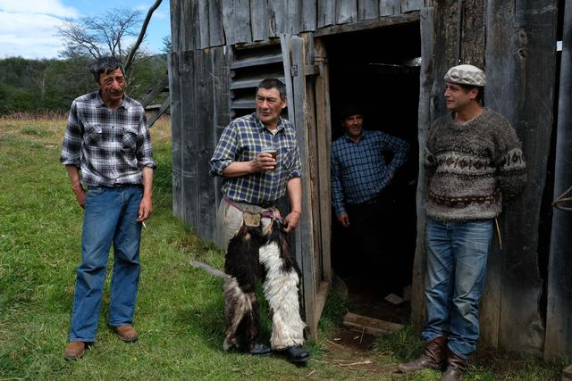

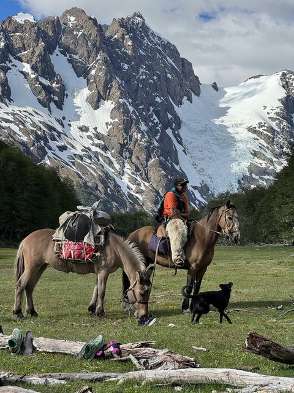

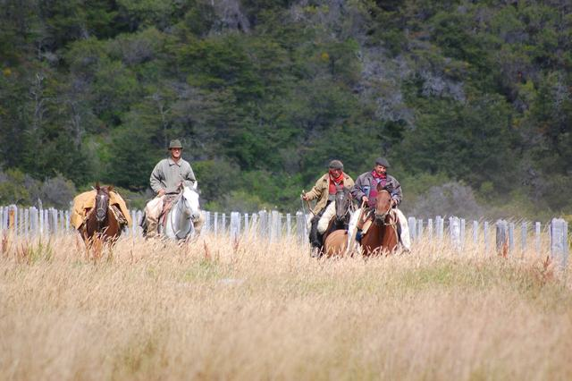

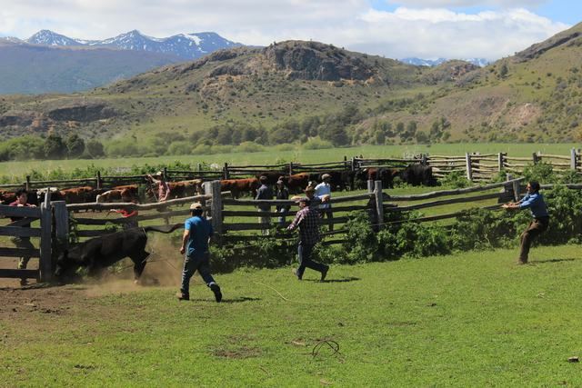

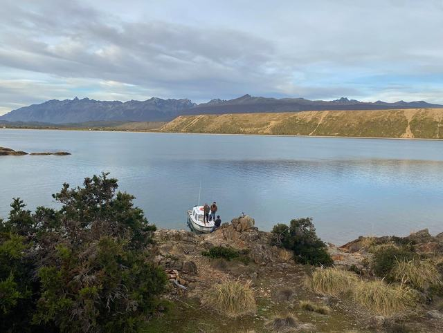

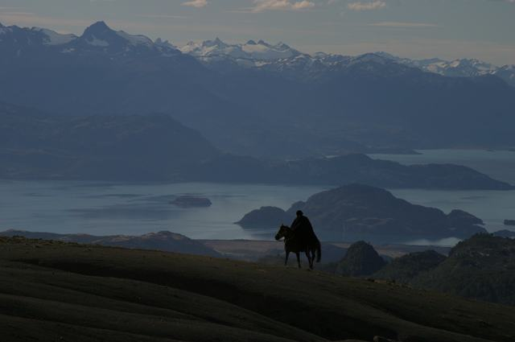

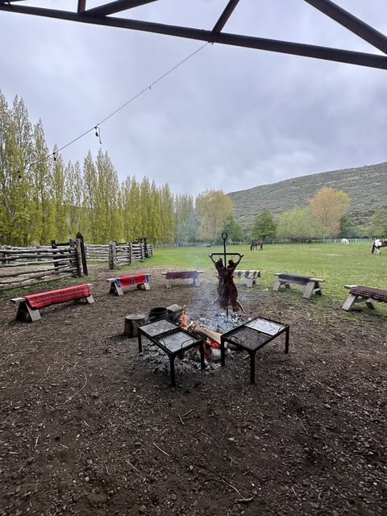

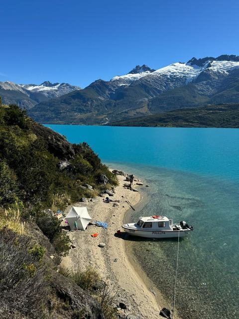

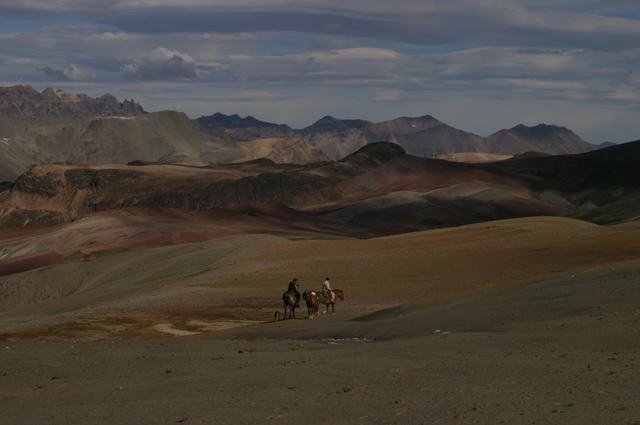

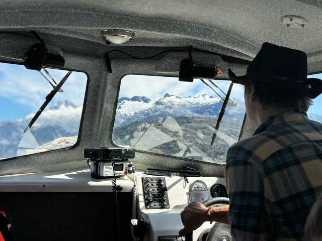

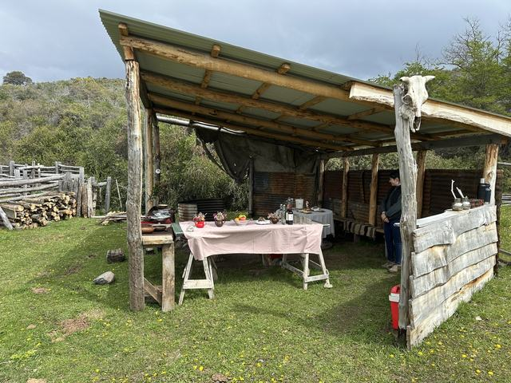

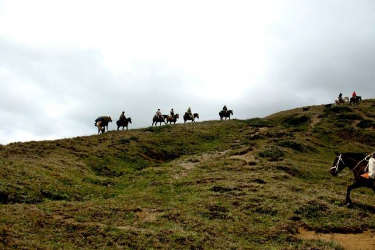

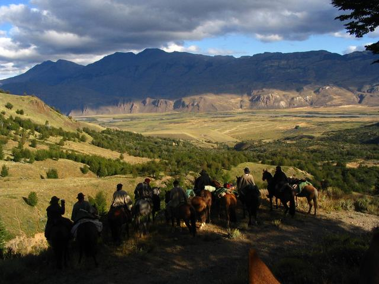

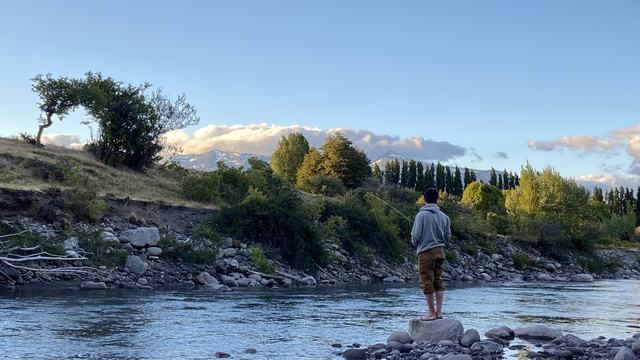
Archivo Histórico


Más del día a día en Instagram: @estancia.lanaviera